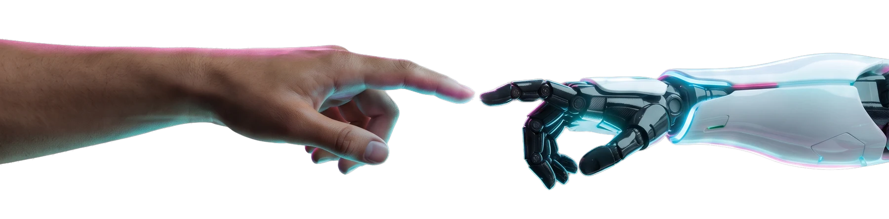

O FUTURO DO
TRABALHO
COMEÇA AGORA!
Não espere o amanhã para descobrir o que você pode ser. Dois dias para explorar tecnologias, ideias e oportunidades que já estão transformando o mundo.
O FUTURO NÃO É
ALGO QUE VOCÊ
ESPERA.
É ALGO QUE
VOCÊ CRIA.
O Future Works Summit transforma o contato com a tecnologia em experiência real. Um encontro gratuito para descobrir novas habilidades, testar possibilidades e enxergar de perto os caminhos do trabalho que está por vir.
VEJA O QUE TE ESPERATECHNOLOGY / EARTH[ SYSTEM CONNECTED ]
HUMAN × FUTURE
O AMANHÃ
EXPERIÊNCIAS
GRATUITO
PARA EXPLORAR
VOCÊ NÃO VEIO
APENAS ASSISTIR.
Aproxime-se, participe, descubra. Cada espaço foi pensado para transformar curiosidade em novas perspectivas.
IN MOTION ↗BEYOND
THE
EXPECTED.
O PRÓXIMO PASSO
É SEU.

O encontro entre criatividade humana e novas tecnologias abre caminhos que antes pareciam impossíveis.
TOUCH THE FUTURE_ASSUNTOS QUE
MOVEM O MUNDO.
Uma jornada de conversas, demonstrações e descobertas. Selecione um tema para conhecer as trilhas previstas para o Summit.
O MUNDO ESTÁ MUDANDO.
E VOCÊ?
Entenda como as transformações tecnológicas estão redesenhando a sociedade, a educação e o mercado de trabalho — e por que isso importa para o seu futuro.
* Eixos temáticos previstos no projeto. Palestrantes, horários e atividades específicas serão divulgados pelos canais oficiais.
O FUTURO
NÃO PODE SER
PARA POUCOS.
O conhecimento precisa circular. Por isso, o Summit aproxima estudantes da rede pública, jovens, profissionais, empresas e instituições de ensino das oportunidades da nova economia.
FAÇA PARTE DESSA CONEXÃOPARA TODO
MUNDO.CEILÂNDIA / DISTRITO FEDERAL
O FUTURO TEM
ENDEREÇO.
PARQUE DA VAQUEJADACEILÂNDIA / DF
DOIS DIAS DE INOVAÇÃO.
UMA NOVA VISÃO DE FUTURO.
PERGUNTAS
FREQUENTES.
Informações rápidas sobre datas, local, acesso e programação do Future Works Summit 2026.
01Quando acontece o Future Works Summit 2026?
Nos dias 10 e 11 de novembro de 2026. Os horários de cada atividade serão divulgados pelos canais oficiais do evento.
02Onde vai ser o evento?
No Centro Olímpico e Paralímpico do Parque da Vaquejada, em Ceilândia, no Distrito Federal.
03A entrada é gratuita?
Sim. A entrada no Future Works Summit é 100% gratuita.
04Quais temas o Future Works Summit aborda?
Inteligência artificial, robótica, profissões do futuro, economia digital, empreendedorismo, startups e inovação e protagonismo. A programação inclui realidade virtual, arena gamer, palestras e talks.
05Para quem é o evento?
Para estudantes da rede pública, jovens, profissionais, empreendedores, startups, educadores, instituições de ensino e qualquer pessoa curiosa sobre tecnologia e o futuro do trabalho.
06Como acompanho inscrições e novidades?
Pelo Instagram oficial @futureworkssummit, onde serão divulgadas as inscrições, a programação, os palestrantes e os horários.
07Quem realiza o Future Works Summit?
A realização é do Instituto DNA Social, com apoio institucional da Secretaria de Ciência, Tecnologia e Inovação do Governo do Distrito Federal.
O AMANHÃ
COMEÇA AGORA.
Explore o que vem pela frente. Acompanhe os anúncios de inscrições, atividades e novidades pelos canais oficiais do Future Works Summit.
INSTAGRAM OFICIAL@FUTUREWORKSSUMMIT